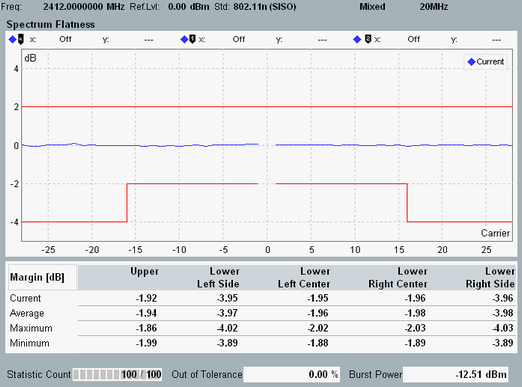
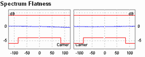

View Spectrum Flatness
The "Spectrum Flatness" view comprises a diagram and a table with margin results.

Spectrum flatness view (OFDM contiguous)
The diagram displays:
- Average energy in all allocated subcarriers as a blue line.
The subcarrier energies are normalized to the arithmetic mean of the average energies in the center carriers, hence the line is vertically centered at 0 dB. - Configured upper and lower limits as red lines, if limit checking is enabled.
For background information, see "Spectrum Flatness Limits OFDM".
The margin table presents the margins to the upper and lower spectrum flatness limits, as described in "Spectrum Flatness Limits OFDM".
For 80+80 MHz signals, all results are available per segment. The diagram is split into two diagrams.

Spectrum flatness view (802.11ac, 80+80 MHz)
For query of the results via remote control, see:
For additional information, refer to "Common View Elements".